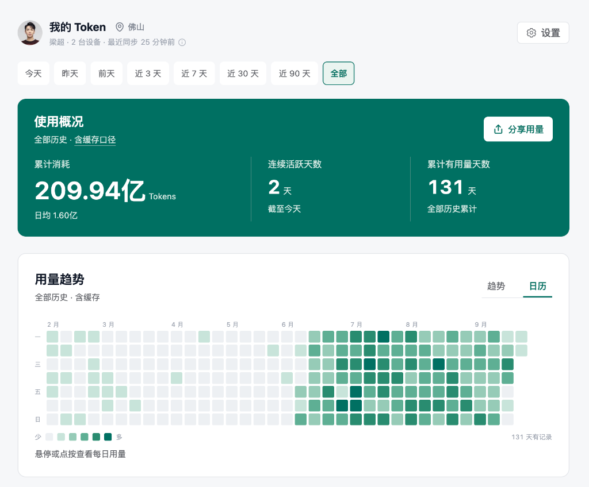
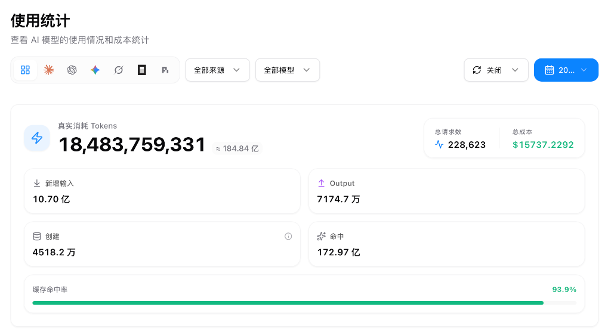

从“每天机械点击2小时”
到自研百万级业务系统
一个天猫一线运营的 AI 进化史：告别被动对话，把 AI 深度嵌入业务工作流
这不是纸上谈兵：200 亿 Token 砸出来的实战经验
用真实数据说话：过去 131 天高强度实战，把 AI 当作日常工作的水电煤

🔍 点击放大全屏从 6 月到 9 月密密麻麻的深绿热力图（131天），高频、连续地把 AI 挂载在业务里处理复杂运算与分析。

🔍 点击放大全屏调用覆盖全主流大模型，高达 93.9% 的缓存命中率证明构建了成熟、稳定复用的业务上下文体系。
AI 是什么？我们该如何建立正确的认知？
如果还把 AI 当作聊天玩具或搜索引擎，你将错失整个时代的生产力红利
“AI 就是一个大语言对话框，偶尔帮我润色几句假大空的文案，或者替代百度查查百科。在具体的运营业务里，它根本不知道怎么操作。”
AI 是一个“24小时在线、精通全网编程与商业逻辑、不知疲倦，但极度需要明确指令与把关的首席实习生团队”。
从工具到系统：AI Agent 的 4 层能力阶梯
理解这四层架构，你就能看懂 AI 如何从单点交互进化为业务自动化
给模型下达即时指令。如同一句交代：“帮我想 5 个标题”。
注入天猫行业数据、人群画像、竞品详情、历史优秀案例。
Plan 规划 $\to$ Act 执行 $\to$ Check 验收 $\to$ 优化迭代。
连接真实世界的管道：浏览器插件、API、表格计算器、权限管控。
解密 Skill（业务技能包）：真正嵌入业务流程的核心钥匙
Skill 不是一个孤立的技术层，而是跨越四层的「标准业务 SOP 封装胶囊」
意图触发器 (Trigger)
用户只需发一句话或一个指令，无需手写几十行提示词，即刻唤醒对应的业务能力。
专业规范与经验 (Rules)
预置资深天猫运营的经验、字段解释、细分指标公式、质检准则，按需动态注入。
多步 SOP 闭环 (Workflow)
先出 Plan 提纲 $\to$ 提取数据 $\to$ 校验计算 $\to$ 自我反思纠偏，确保输出结果 100% 可靠。
专属工具束 (Tools)
连接 Chrome 插件、天猫生意参谋下载脚本、达摩盘接口、客服聊天数据提取器。
不再需要每次苦思冥想长篇提示词，告别临时试错翻找。把日常高频、繁琐的流程打包成专属技能，一键快速调用，把宝贵时间从繁琐琐事中彻底赎回！
每一次业务突破、调优的参数、踩过的坑，都固化为你独一无二的个人 Skill。经验不再随项目结束而遗忘，而是越滚越厚的个人数字资产，持续放大你的专业壁垒。
极简公式：AI 员工 = 业务 SOP + 调用大模型
彻底击穿底层本质：把所有的理论，收拢为一个任何人都能立刻看懂的落地模型
梳理你在岗位的真实工作步骤、执行顺序和交付标准。比如：先看大盘、再看竞品、再筛地域、最后检查转化率。
找到擅长处理对应类型工作的大模型与工具。比如写脚本、写代码插件、做表格运算，让它作为无休的引擎执行。
一切从“厌倦了每天点 2 小时按钮”开始
最伟大的生产力工具，往往诞生于最质朴的“偷懒”动机
- ✕ 推广有 10 个、20 个甚至几十个计划，为了加全，必须人工循环点击“小曼护航”
- ✕ 手指点酸、眼神发直，每天宝贵精力全部浪费在无价值的重复劳动中
- ✓ 从零探索：向 AI 提问、让它分析网页结构、写出代码、指导安装插件
- ✓ 极度兴奋的一刻：插件点亮并自动运行，电脑自己点，每天实打实节省 1~2 小时！
- ✓ 心智蜕变：原来我不需要求助技术部，AI 就能把我的想法直接变现！
把推广从“黑盒”变成“白盒雷达”
尝到甜头后，我把推广运营的深层痛点，逐一融合进了定制工具库
原来手动新建、匹配参数需要半小时，现在秒级一键复制，计划搭建效率提升 10 倍。
自动拉取分时投产曲线，一眼揪出哪个时间段在“只烧钱不转化”，实时止血调整溢价。
拆解不同省市转化与 ROI 差异，快速过滤低效地域，将预算集中到高转化黄金区域。
彻底打破平台笼统的人群标签壁垒，看清每个计划背后的人群结构与实时表现。
通过 AI 工具将推广数据完全“白盒化”，运营可以实时监控、精准调参，决策底气彻底不一样了。
30 分钟搞定 2 年大盘数据：超越 10 万级商业软件
达摩盘实战案例：护眼大路灯细分市场洞察与行业分析大模板的诞生
- ✕ 达摩盘海量原始数据，几万行表格手动下载、合并、清洗
- ✕ 手动做透视表、画图、写分析报告，耗费 1 到 2 天，身心俱疲
- ✕ 商业软件动辄报价 10 万+，定制能力差且数据颗粒度常不准
- ✓ 全自动采集 (Harness)：脚本自动抓取并下载半年~两年的行业原始数据
- ✓ 智能清洗洞察 (Context+Loop)：自动跑出人群趋势、访客变化、GMV走势、加购转化
- ✓ 高价值聚焦：运营只花 30 分钟做结果检查与细分蓝海机会挖掘
守死流量最后一米：实时客服质检与转化提升
运营最重要且见效最快的一环，是客服的询单转化率
千辛万苦投流买来的高净值进店客户，因为客服回复生硬、遗漏跟进、未及时逼单而流失。
最初我想让 AI 批量分析导出记录；在与客服主管陈伟深入沟通后，获悉聊天记录原来可实时获取！
运营小伙伴每天实时盯紧客服询单聊天，AI 辅助抓出高流失风险对话，当场调整话术挽回客人。
AI 重构电商运营四大核心战场
每一个业务动作，都能找到 AI 深度嵌入的切入点
大盘趋势与竞品监控。30分钟跑完行业 2 年大盘数据，识别大盘走向，避免逆势而为。
挖掘未被满足的蓝海。如“护眼大路灯”的人群场景交集，快速定位空白属性机会。
推广人群分析白盒化、上千条差评批量语义清洗，透视消费者心智与未被满足的痛点。
死守询单转化。实时客服质检系统，实时监控会话异常，提炼金牌销售脚本。
我们每个人该怎么做？驾驭 AI 的 4 个习惯
不需要懂编程，只要掌握这四套与 AI 协同的标准动作
复杂业务千万不要让 AI 直接给最终答案！要求它先出工作规划与执行框架（Plan），人把关框架无误后，再让它分步执行。
AI 负责百倍级的执行与生产速度，人负责商业真实性与常识把关。未经业务检验的 AI 产出，绝不能直接上线。
把个人测试成功的 Prompt + 上下文规则 + 检验流程，封装成开箱即用的 Skill 胶囊，方便自己长期复用，并共享给团队。
让 AI 扮演最挑剔的买家挑战你的主图，扮演竞争对手推演营销战术，扮演数据分析师挖掘潜在异常。
不止于运营：企业全岗位 AI 作战地图
8 个岗位共用一个 AI 智能中枢，每个岗位都有明确的输入、AI 工作流与交付产物
- ✦主图场景合成：多场景裂变与背景重绘
- ✦详情页视觉化：核心卖点提效与模块出图
- ✦创意灵感素材：全网风格解构与资产沉淀
- ✦热点追踪与选题：爆款逻辑深度解构与定位
- ✦黄金前3秒脚本：吸睛分镜规划与痛点脚本
- ✦多版本变体裂变：批量提示词生成与拍摄单
- ✦竞品矩阵对比：定价策略、核心卖点差异化
- ✦蓝海细分机会：行业大盘深度洞察与趋势挖掘
- ✦商品周期规划：梯队货盘管理与上新测款建议
- ✦促单话术打磨：开播引导、高频异议即时化解
- ✦投流节奏监控：在线互动热度与投放承接监测
- ✦场次复盘洞察：高光片段秒级切片与数据复盘
- ✦智能分镜粗剪：素材高光识别与批量粗剪卡点
- ✦自动生成花字：字幕吸附、音效配合与节奏包装
- ✦多规格批量出片：动态贴纸渲染与全渠道分发
- ✦爆款逻辑深度解构：竞品模式与流量密码提取
- ✦品牌观点知识库：差异化主张沉淀与选题矩阵
- ✦全套长尾剧本：多平台种草脚本批量规划排期
- ✦金牌话术 SOP 库：高频答疑秒回与异议打消
- ✦流失客预警与挽回：会话实时质检与堵点干预
- ✦高意向识别与催付：意向精准分层与智能提醒
- ✦全渠道数据汇聚：多平台经营指标无缝归集
- ✦经营日报秒级生成：异常波动预警与因果归因
- ✦商业决策看板：多维趋势可视化与策略支撑
没有谁会被 AI 取代，
只有“会用 AI 的超级个体”领先时代
找一个今天最耗时、最痛苦的机械任务（表格清洗/竞品对比/文案初稿），交给 AI。
只要它帮你省下第一个 30 分钟，你的工作心智和工作节奏就会彻底发生质变。
把你的有效工作流封装成业务技能包，让我们一起进化为高效、从容的超级个体！